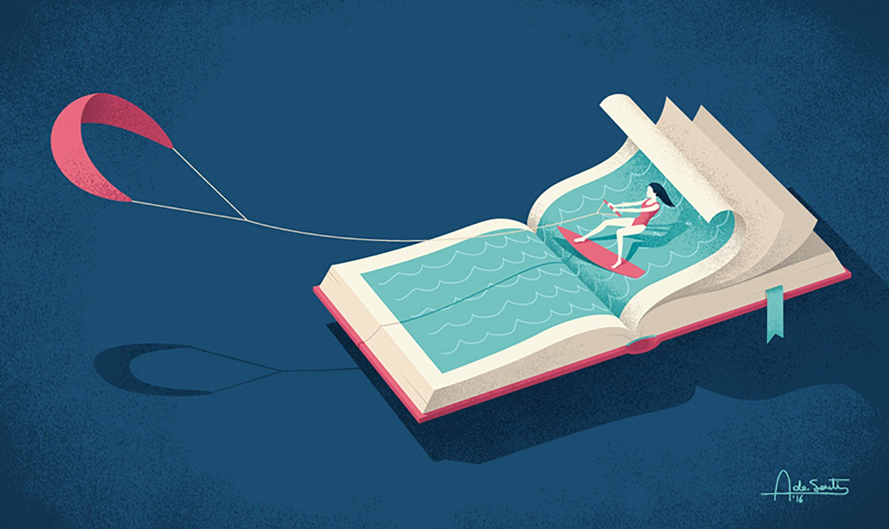

CFLC
Cómo funciona anotar un libro
“Hay quienes no pueden leer sin una lapicera en la mano, casi como si la persona que lee y la persona que escribe estuvieran conversando. Un poco nos desespera pensar en el libro marcado, lleno de rayas grises, o marcas de colores, hojas dobladas, una línea vertical, otra horizontal, alguna que otra cruz y, en aquellos casos extremos, alguna palabra directamente tachada y vuelta a escribir. Hay algo en la pérdida de lo inmaculado que, cuando se trata de un libro, nos hace cosquillas en el cerebro.
“Sin embargo, lo que capturan las marcas sobre un libro pareciera volverse indispensable al fenómeno de la lectura. E incluso cuando no toda conversación es interesante, aquellas que adornan las páginas de un libro logran, en muchos casos, capturar con suma fidelidad el impresionante fenómeno de la vida a través de la palabra escrita. Son estas marginalia — notas, glosas y comentarios hechos en el margen de un libro — las huellas en la arena a través de las cuales podemos reconstruir por dónde es que deambuló una consciencia."
